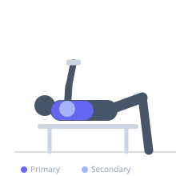
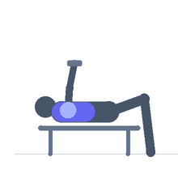

Exercise guide / Lying Dumbbell Svend Press
Lying Dumbbell Svend Press
The Lying Svend Press is performed flat on a bench, extending and returning a weight plate or two pressed-together dumbbells from the chest while maintaining continuous inward squeezing force. The lying position allows slightly greater loads than the standing version and targets the sternal head of the pectoralis major more directly.
Primary muscles
pectoralis major sternal
pectoralis major clavicular
Secondary muscles
deltoid anterior
pectoralis minor
Equipment
Dumbbell (Fixed)
Flat Bench
Optional
Weight Plates


Starting position
- Lie flat on a bench holding two dumbbells or a weight plate pressed together at chest level, arms slightly bent.
Setup
- Use a flat bench. Hold a light plate or two pressed dumbbells above the lower chest. Begin with the weight resting on the sternum.
Steps
- Step 1: Squeeze the weight firmly together and press upward from the chest to full arm extension.
- Step 2: Hold the squeeze and lower slowly back to the chest.
- Step 3: Touch the chest and immediately press again without releasing tension.
- Step 4: Keep constant adduction force throughout all reps.
Coaching cues
- Constant squeeze — no relaxation between reps
- Feel the inner chest working
Breathing
- Exhale as you press up. Inhale as you lower.
Range of motion
- Full arm extension at top; controlled return to chest.
Tempo
- 2-1-2-1
Common mistakes
- Releasing the squeeze at the chest
- Flaring the elbows wide rather than keeping them somewhat tucked
Safety
- Light loads only — this is a finishing or isolation exercise
- If using round dumbbells, they may slip — hex preferred
Training
- hypertrophy: 12–20 reps
- hypertrophy: 2–4 sets
- Rest: {'hypertrophy': 60}